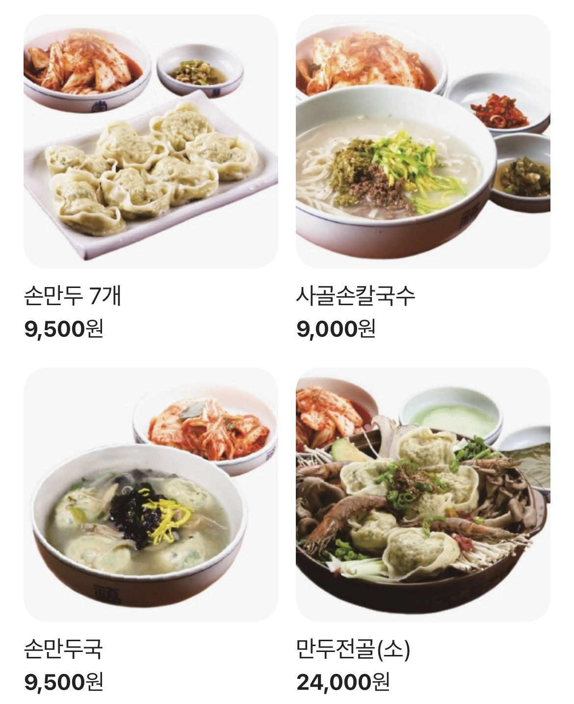
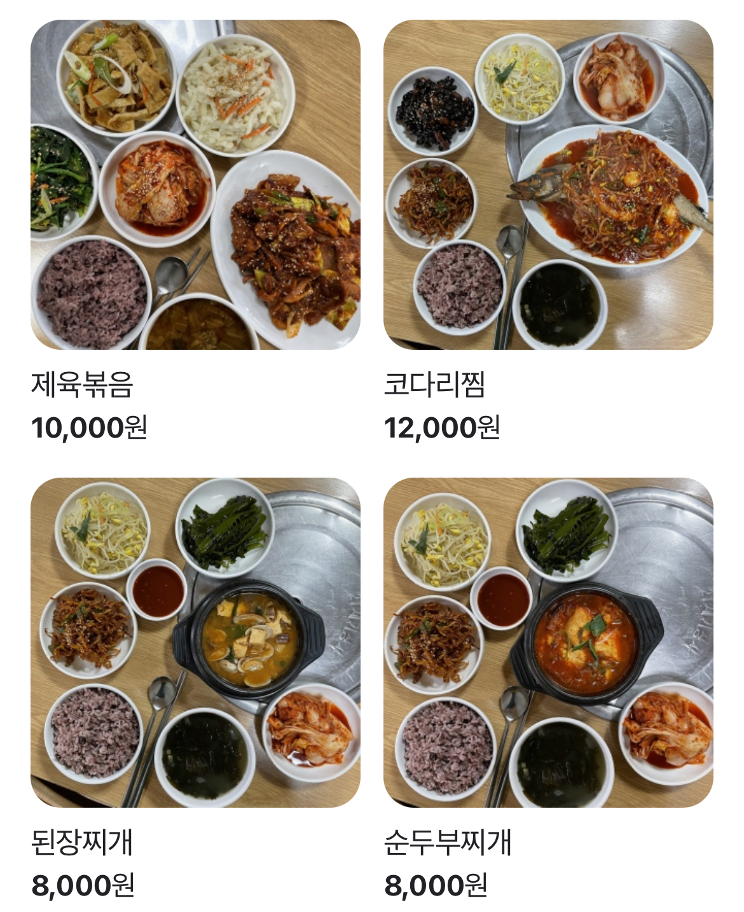
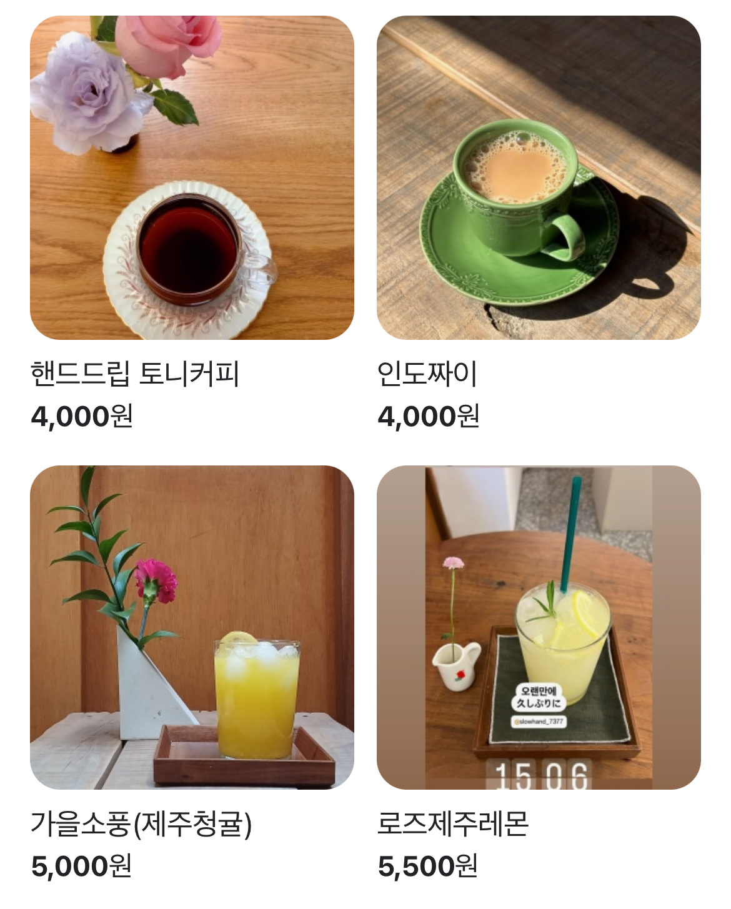

개요
덕성여자대학교는 서울 도봉구 삼양로144길 33에 있습니다.
주변에 맛있는 음식점이 널려 있습니다.
아래의 맛집 리스트는 다이닝코드에서 덕성여대 맛집으로 검색한 결과로 나온 210곳 중 9곳을 뽑았습니다.
덕성여대 맛집 목록 (출처: 다이닝코드)
맛집 상세 정보
사진을 클릭하면 상세 페이지로 이동합니다
| 대표이미지 | 상호 | 구분 | 평점 | 위치 |
|---|---|---|---|---|
 |
미성반점 419 | 짬뽕, 중국집 | 4.6 | 서울특별시 강북구 4.19로 37 1층 |
 |
춘천막국수 | 막국수, 녹두전 | 4.4 | 서울특별시 강북구 삼양로141길 4-4 춘천막국수 |
 |
궁전회관 | 기사식당, 연탄불백 | 4.2 | 서울특별시 강북구 한천로 1159 1층 |
 |
히피스베이글 | 베이글, 빵 | 4.7 | 서울특별시 강북구 삼양로 528 1층 |
 |
마포감자국 | 감자탕, 감자국 | 4.4 | 서울특별시 강북구 한천로 1158 1층 |
|  | 예와 손만두 | 만두, 만두전골 | 4.6 | 서울특별시 강북구 4.19로 40-8 예와손만두 |
|  | 진미기사식당 | 기사식당, 한천 | 4.1 | 서울특별시 강북구 한천로 1163 1층 진미기사식당 |
 |
우이동주막집 | 족발, 보쌈 | 4.2 | 서울특별시 강북구 삼양로141길 4-6 우이주막집 |
|  | 슬로핸드 | 카페, 핸드드립커피 | 4.5 | 서울특별시 강북구 삼양로141길 15-8 |